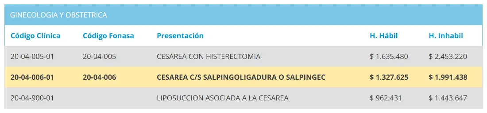
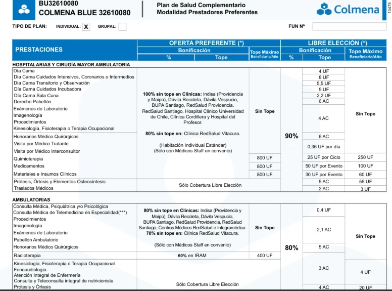
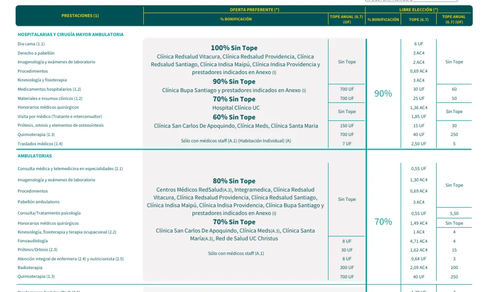
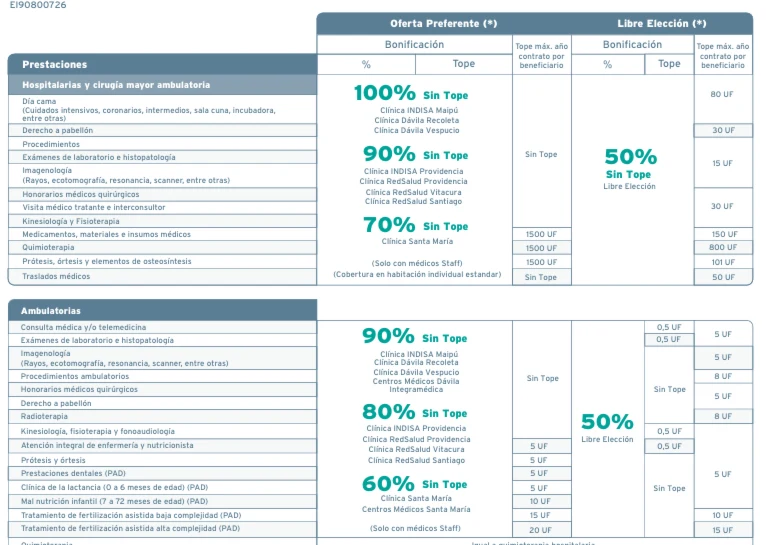
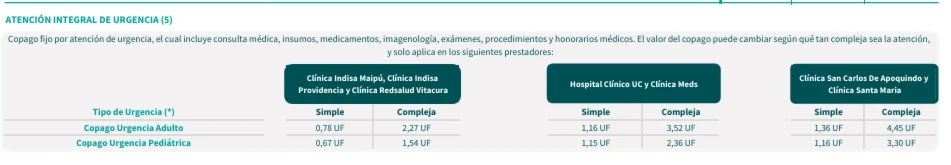
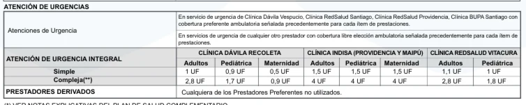
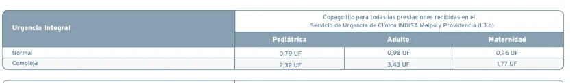

Clínica Indisa: qué Isapre conviene si te atiendes ahí
Dónde está cada sede, cuánto cuesta atenderse ahí según su propio arancel y qué tiene que traer tu plan para cubrir lo caro de esta clínica.
En una línea: En Indisa, lo que más define tu bolsillo es el copago fijo de urgencia de tu plan en esta clínica: la urgencia es lo que más se usa acá y la diferencia entre una Isapre y otra es de varias decenas de miles de pesos.
Qué es Clínica Indisa y dónde está
Es una clínica de alta complejidad en Providencia, conocida por su urgencia y por dos áreas donde es referente: el tratamiento del gran quemado, con unidad de paciente crítico propia, y la maternidad, junto con su unidad de medicina reproductiva.
| Sede | Comuna | Dirección |
|---|---|---|
| Clínica Indisa y su urgencia | Providencia | Av. Santa María 1810 |
| Clínica Indisa Maipú | Maipú | Santa Elena 901, esquina Américo Vespucio |
| Centro Médico Los Conquistadores | Providencia | Los Conquistadores 1926 |
| Centro Médico Los Españoles | Providencia | Los Españoles 1855 |
Revisa esto en tu plan: que aparezcan la clínica y sus centros médicos. Si tu plan nombra solo la clínica y tus controles son en Los Conquistadores o en Los Españoles, esas consultas te quedan en libre elección, que cubre bastante menos.
Cuánto cuesta atenderse ahí
Estos son valores del arancel que publica la clínica, en horario hábil. Indisa publica precios particulares, así que lo que pagues tú depende de cuánto bonifique tu plan.
| Prestación | Código Fonasa | Valor particular |
|---|---|---|
| Consulta de urgencia | Sin código | $70.960 |
| Resonancia de rodilla | 04 05 013 | $461.782 |
| Día cama individual de parto | 02 01 401 | $784.950 |
| Derecho de pabellón de parto | 20 04 003 | $962.431 |
| Cesárea, con o sin salpingoligadura | 20 04 006 | $1.327.625 |
Arancel publicado por Clínica Indisa, consultado el 26 de septiembre de 2026. En horario inhábil varios de estos valores suben alrededor de un 50%.
Maternidad: los valores que conviene tener a mano
Si estás eligiendo dónde tener a tu hijo, estos son los valores particulares de esta clínica. Lo que termines pagando depende de la cobertura de parto de tu plan y, si entraste hace poco a la Isapre, de la regla de los novenos.

Las 7 Isapres frente a Clínica Indisa
Así se para cada Isapre en esta clínica. En verde, donde cubre bien, y en rojo, donde se queda corta.
Desliza la tabla para ver todas las Isapres →
| En Clínica Indisa | |||||||
|---|---|---|---|---|---|---|---|
| Cobertura preferente | Sí | Sí | Sí | Sí | Sí | Sí | Sí |
| Urgencias integrales (copago fijo) | Sí | Sí | Sí | No tiene acá | Sí | Sí | No tiene acá |
| Kinesiología | Sin tope en preferentes | Tope anual muy bajo | Sin tope | Con tope | Sin bono: pagas y reembolsas | Tope anual muy bajo | Con tope |
| Prótesis y órtesis | Hasta 150 UF | Hasta 50 UF | Sin tope | Sin tope | Tope muy bajo | Hasta 10 UF | Sin tope |
| Quimioterapia | Hasta 700 UF | Hasta 1.000 UF | Sin tope | Sin tope | Sin cobertura preferente | Sin cobertura preferente | Sin tope |
| GES 55, gran quemado | Sí | Sí | Sí | Sí | Sí | Sí | Sí |
Oferta vigente a septiembre de 2026. Las coberturas cambian según el plan y se confirman al momento de cotizar.
Lo que salta a la vista: Banmédica y Vida Tres no tienen convenio de urgencia integral con esta clínica: su red de urgencias se concentra en Dávila y Santa María. Entre las que sí lo tienen, el monto cambia bastante: de 2,27 UF a 4 UF en una urgencia compleja de adulto.
La buena noticia del GES 55: las siete Isapres tienen convenio con Indisa para la patología GES 55, gran quemado. O sea, para el caso más grave y más caro de esta clínica, el sistema GES te cubre con cualquiera de ellas, pagando el deducible que corresponda.
Qué Isapre conviene en Clínica Indisa
Acá no hay una sola ganadora, y por eso recomendamos tres: Consalud, Colmena y Esencial. Cada una gana por un motivo distinto.
- Consalud. Tiene urgencia integral acá y es la que mejor cubre la kinesiología, sin tope en prestadores preferentes. Sus topes de prótesis, 150 UF, y de quimioterapia, 700 UF, son de los más altos entre las que tienen convenio de urgencia en esta clínica.
- Colmena. Urgencia integral acá, la red GES y CAEC más amplia del sistema y los reembolsos más rápidos, en 24 a 48 horas. Su punto flojo son los topes de kinesiología y de prótesis, así que conviene si tu riesgo está más en lo hospitalario que en la rehabilitación.
- Esencial. Urgencia integral acá con copagos intermedios, kinesiología sin tope y cobertura alta en Indisa Maipú. A cambio, es la más cara de entrada y tiene una sola sucursal.
Las otras cuatro quedan más atrás en esta clínica: Banmédica y Vida Tres no tienen urgencia integral acá, Cruz Blanca arrastra reembolsos de hasta 45 días y kinesiología sin bono, y Nueva Masvida tiene los topes más bajos del sistema.
Cuál de las tres depende de ti. Si te operaste o haces rehabilitación, Consalud. Si te preocupa un evento grave y quieres reembolsos rápidos, Colmena. Si lo tuyo pasa por procedimientos de alta complejidad y puedes pagar más, Esencial. Eso es exactamente lo que revisamos en una asesoría.
Así se ve en planes reales
Estos son tres planes de verdad, uno de cada Isapre recomendada. En los tres aparece Clínica Indisa, Providencia y Maipú, dentro de la oferta preferente con la cobertura más alta del plan. Toca cualquiera para verlo en grande.



Extractos de planes reales, a septiembre de 2026. Son ejemplos: cada Isapre tiene muchas líneas de planes y las coberturas se confirman al cotizar.
El copago de urgencia, lado a lado
Acá es donde más se nota la diferencia entre las tres, y es plata que se paga de verdad: la urgencia de Indisa es de las más usadas de Santiago. Los valores son copago fijo, o sea, lo que pagas sin importar lo que salga la cuenta.
| Isapre | Adulto, simple y compleja | Pediátrica | Maternidad |
|---|---|---|---|
| Consalud | 0,78 y 2,27 UF | 0,67 y 1,54 UF | No lo indica |
| Colmena | 1,5 y 4 UF | 1,5 y 4 UF | 1,5 y 4 UF |
| Esencial | 0,98 y 3,43 UF | 0,79 y 2,32 UF | 0,76 y 1,77 UF |
En pesos, una urgencia compleja de adulto: Consalud $93.126, Colmena $164.098, Esencial $140.714. Calculado con la UF del 26 de septiembre de 2026, $41.024.



Cómo revisar tu propio plan en 3 pasos
- Busca la oferta preferente. Tiene que decir Clínica Indisa, y si te controlas en sus centros médicos, también ellos.
- Busca el copago fijo de urgencia acá. Es la urgencia que más se usa en el sector, y sin copago fijo el monto lo sabes al final.
- Revisa si la clínica está con el porcentaje más alto del plan. Varios planes cubren Indisa al 100% en lo hospitalario, pero dejan otras clínicas más abajo, y al revés. Que aparezca no basta: importa con qué porcentaje.
Preguntas frecuentes
¿Qué Isapre conviene si me atiendo en Clínica Indisa?
Acá no hay una sola: recomendamos Consalud, Colmena y Esencial, porque las tres tienen urgencia integral en esta clínica. Consalud destaca en kinesiología y topes, Colmena en red GES y CAEC y reembolsos rápidos, y Esencial cubre Indisa Maipú al 100%. Banmédica y Vida Tres no tienen convenio de urgencia integral acá.
¿Cuánto cuesta una urgencia en Clínica Indisa?
La consulta de urgencia en horario hábil cuesta $70.960 en su arancel particular, y sube en horario inhábil. A eso se suman los exámenes y procedimientos. Con un plan que tenga copago fijo de urgencia acá, pagas un monto conocido en vez de la cuenta completa.
¿Qué pasa si me atiendo acá por una quemadura grave?
El gran quemado es la patología número 55 del GES, y las siete Isapres tienen convenio con Indisa para esa patología. O sea, el caso más grave y más caro de esta clínica queda cubierto por el sistema GES con cualquiera de ellas, pagando el deducible que corresponda.
¿Indisa es buena para maternidad?
Es una de sus áreas fuertes, junto con su unidad de medicina reproductiva. En el arancel, el día cama individual de parto está en $784.950 y el pabellón de parto en $962.431, valores particulares. Lo que pagues depende de la cobertura de parto de tu plan y de tus meses de afiliación.
¿Mi plan cubre los centros médicos de Indisa?
Revisa la oferta preferente de tu plan: hay planes que nombran la clínica y no sus centros médicos. Si tu control habitual es en Los Conquistadores o Los Españoles, eso te cambia la cobertura del día a día.
Artículos que te podrían interesar
 Ranking de las mejores clínicas de ChileLas 10 clínicas mejor evaluadas del país y lo que ese ranking no mide: cuánto te cuesta atenderte en cada una.
Ranking de las mejores clínicas de ChileLas 10 clínicas mejor evaluadas del país y lo que ese ranking no mide: cuánto te cuesta atenderte en cada una.
 Clínica Santa María: qué Isapre conviene si te atiendes ahíSus 5 sedes, los precios que publica la clínica y las prestaciones que no tienen código Fonasa.
Clínica Santa María: qué Isapre conviene si te atiendes ahíSus 5 sedes, los precios que publica la clínica y las prestaciones que no tienen código Fonasa.
 ¿Cuál es la mejor Isapre en 2026? Tabla comparativaLas 7 Isapres abiertas comparadas: precios por edad, urgencias, reembolsos y reclamos.
¿Cuál es la mejor Isapre en 2026? Tabla comparativaLas 7 Isapres abiertas comparadas: precios por edad, urgencias, reembolsos y reclamos.
¿Te atiendes en Indisa?
Cuéntanos tu caso y revisamos si tu plan te cubre bien en esta clínica, o cuál sí lo hace. Gratis y sin compromiso.
Quiero que revisen mi plan →Los precios son del arancel publicado por Clínica Indisa y fueron consultados el 26 de septiembre de 2026; pueden cambiar y corresponden a su modalidad particular en horario hábil. Las imágenes son extractos de planes reales de cada Isapre, a septiembre de 2026, y se muestran como ejemplo: las coberturas cambian según el plan y se confirman al momento de cotizar. Para evaluar tu caso particular, te recomendamos una asesoría.